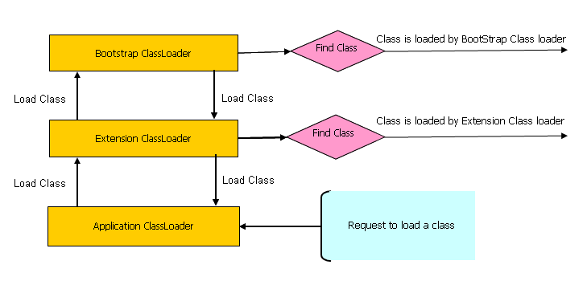

Java - Misc#
Strings#
String pool was used to be in Permgen, but since java 8 it has been moved to main heap area.
Since java 1.7
+operators are implemented usingStringBuilder’s.append()method..concat()can only concat 2 strings (unlike.append()and+which can concat different data types)There was a memory leak in java 1.6
String()constructor.Regex - match introduced in java 8.
Stream#
The data comes from elsewhere (a collection, array, generator function, or I/O channel) and is processed through a pipeline of computational steps to produce a result or side effect, at which point the stream is finished.
Stream’s focus is on computation, not data.
Streams provide no storage for the elements that they process*, and the lifecycle of a stream is more like a point in time — the invocation of the terminal operation.
For streams, only the terminal operation is eager, all the others are lazy.
Stream operations represent a functional transformation on their input (also a stream), rather than a mutative operation on a data set (filtering a stream produces a new stream whose elements are a subset of the input stream but doesn’t remove any elements from the source).
Example of non-stream vs stream operation:
//Ad-hoc query over a collection
Set<Seller> sellers = new HashSet<>();
for (Txn t : txns) {
if (t.getBuyer().getAge() >= 65)
sellers.add(t.getSeller());
}
List<Seller> sorted = new ArrayList<>(sellers);
Collections.sort(sorted, new Comparator<Seller>() {
public int compare(Seller a, Seller b) {
return a.getName().compareTo(b.getName());
}
});
for (Seller s : sorted)
System.out.println(s.getName());
txns.stream()
.filter(t -> t.getBuyer().getAge() >= 65)
.map(Txn::getSeller)
.distinct()
.sorted(comparing(Seller::getName))
.map(Seller::getName)
.forEach(System.out::println);
Key Advantages:
No distraction of garbage variable (sellers, sorted in the above example)
Don’t have to keep track of context which leads to code understanding on one glance, less error prone.
ClassLoader#
javac : *.java files to *.class files
Class-loader : loads the *.class files!
Kinds of class loaders and load from locations:
Bootstrap (or “Primordial ClassLoader”)
JRE/lib/rt.jar
Extension
JRE/lib/extOr any directory denoted by :
"java.ext.dirs"
System or Application
"CLASSPATH"environment variable."-classmate"or “-cp” option.Classpath attribute of manifest inside JAR file.
Bootstrap ClassLoader#
Loads standard JDK class files from “rt.jar”
Parent of all class loaders
Doesn’t have any parent
String.class.getClassLoader() == null
Only class loader which is implemented in native language, mostly in “C” !
All others are implemented using
java.lang.ClassLoader
Extension ClassLoader#
Delegates class loading request to its parent (Bootstrap)
If unsuccessful from parent (Bootstrap), it loads class from
"jre/lib/ext"or any directory pointed by"java.ext.dirs"Implemented by :
sun.misc.Launcher$ExtClassLoaderChild or Extension class loader

Principles:
Delegation principle: A class in loaded in Java when it is needed.
Visibility principle: Child ClassLoader can see class loaded by parent ClassLoader, but the vice-versa is not true.
Simple test to prove visibility principle
Get Current class’s ClassLoader by calling,
Abc.class.getClassLoader()====> Abc is an Application ClassLoader classIf we try to load this class using the Extension class loader like:
Class.forName("somepack.Abc", true, ClassLoaderTest.class.getClassLoader().getParent())This will fail! =====> meaning extension class loader cannot see the classes loaded by application class loader
Extras:
Class is loaded by calling
loadClass()method ofjava.lang.ClassLoaderclass which callsfindClass()method to locate bytecodes for the corresponding classExtension ClassLoader uses
java.net.URLClassLoaderwhich searches for class files and resources in JAR and directories. any search path which is ended using “/” is considered a directoryIf
findClass()does not found the class than it throwsjava.lang.ClassNotFoundExceptionand if it finds it calls defineClass() to convert bytecodes into a.classinstance which is returned to the caller